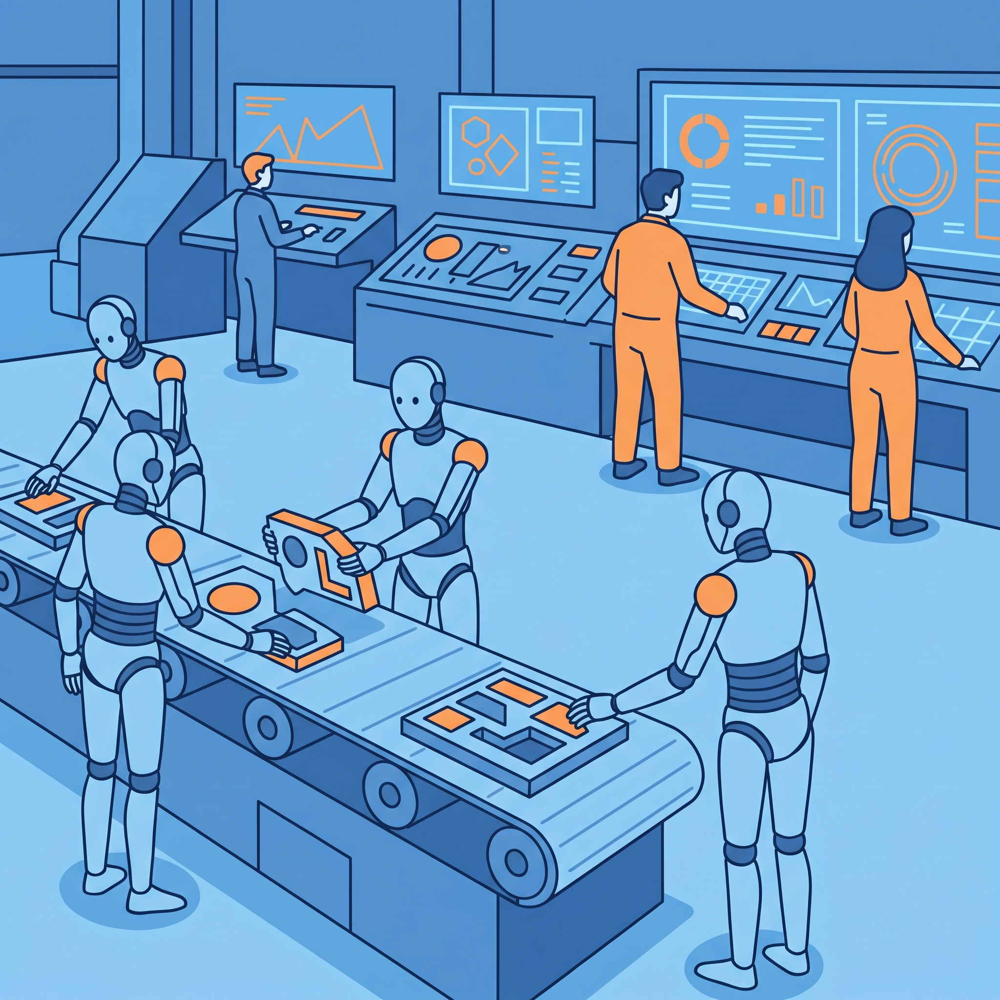
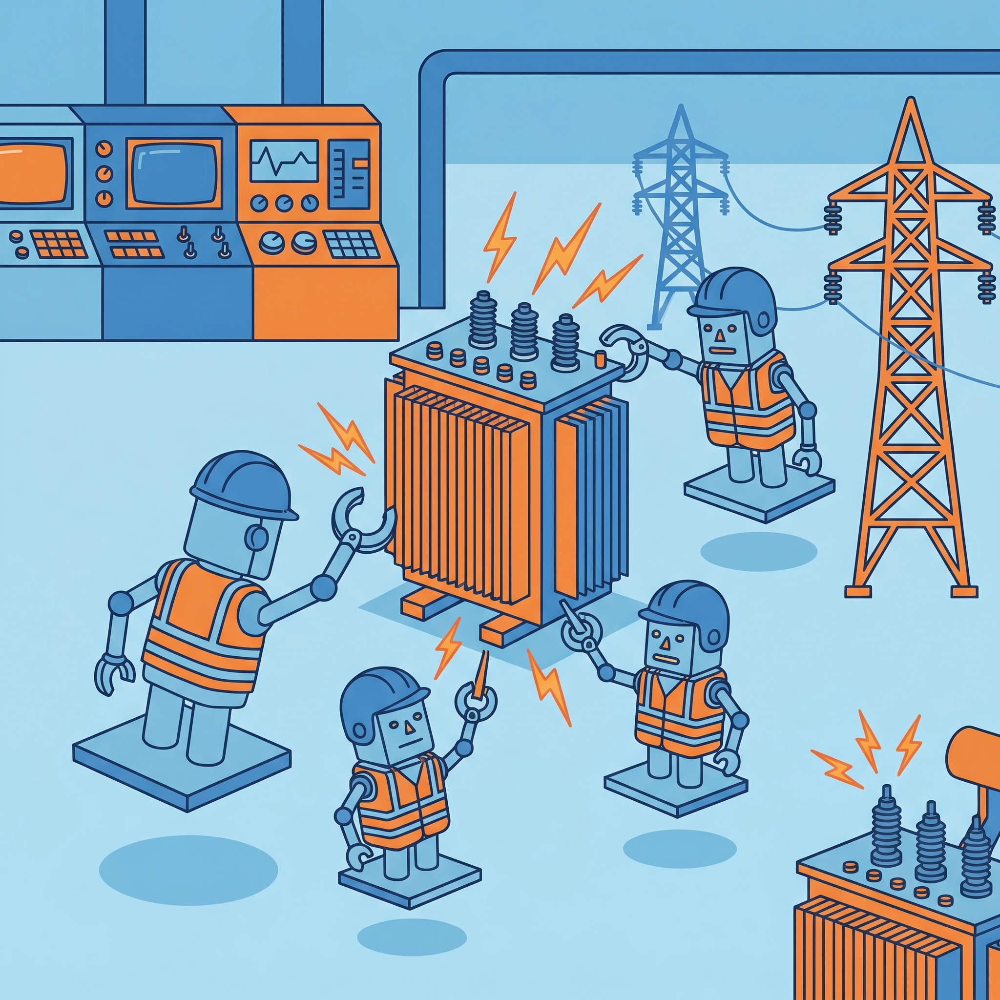
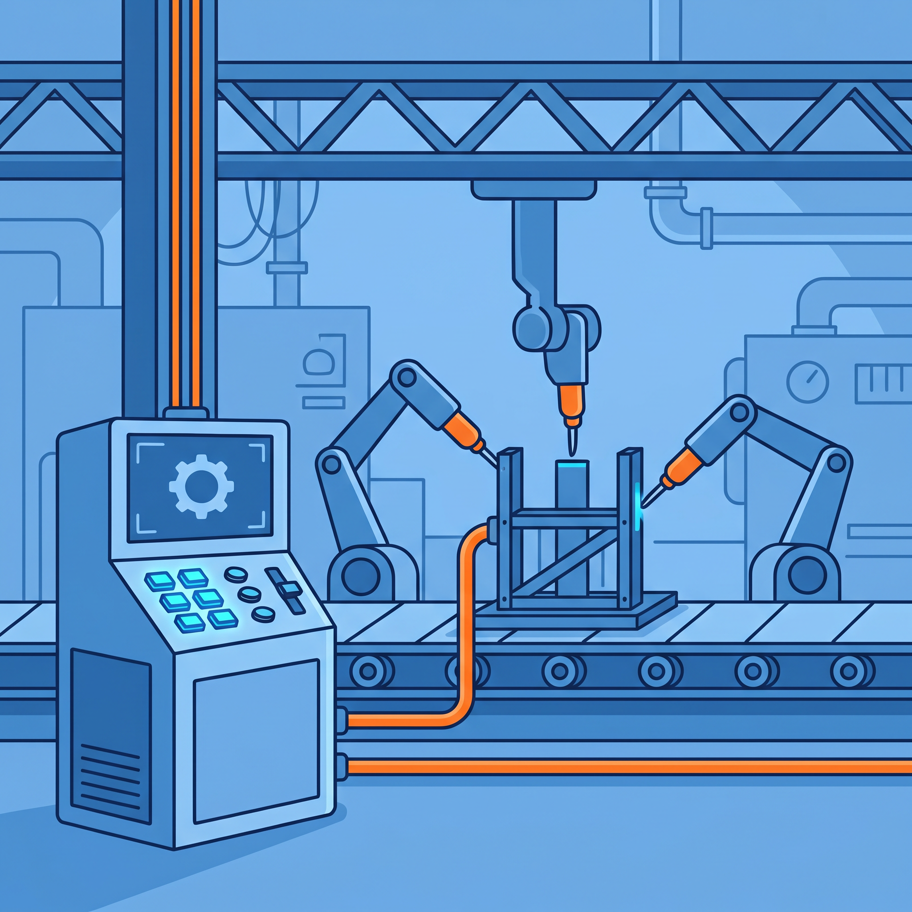
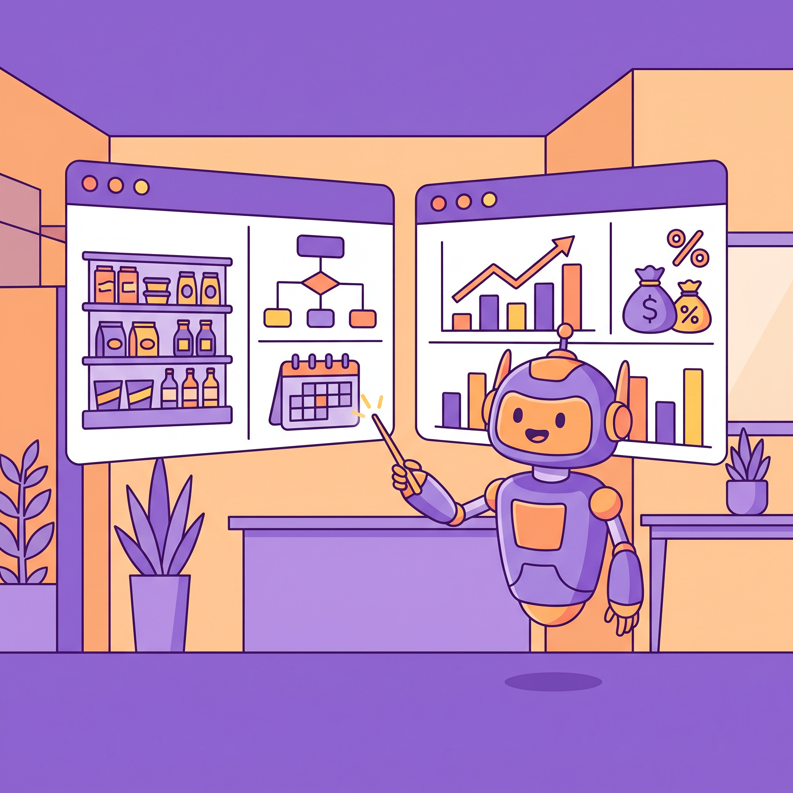
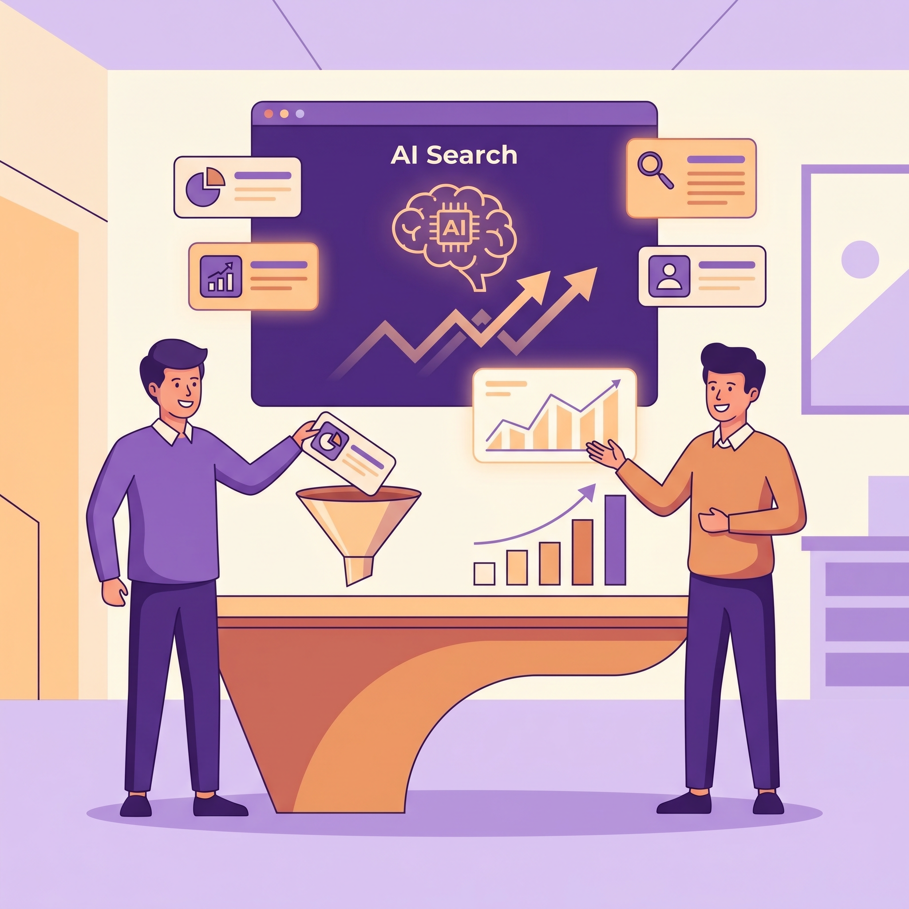
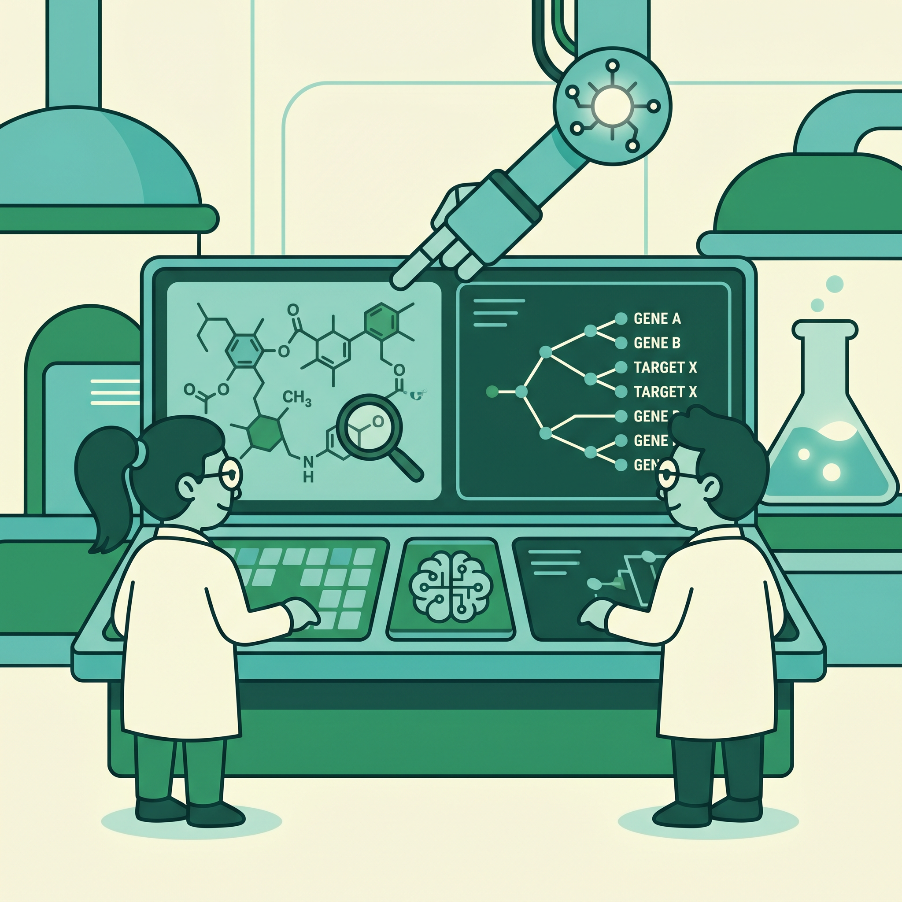
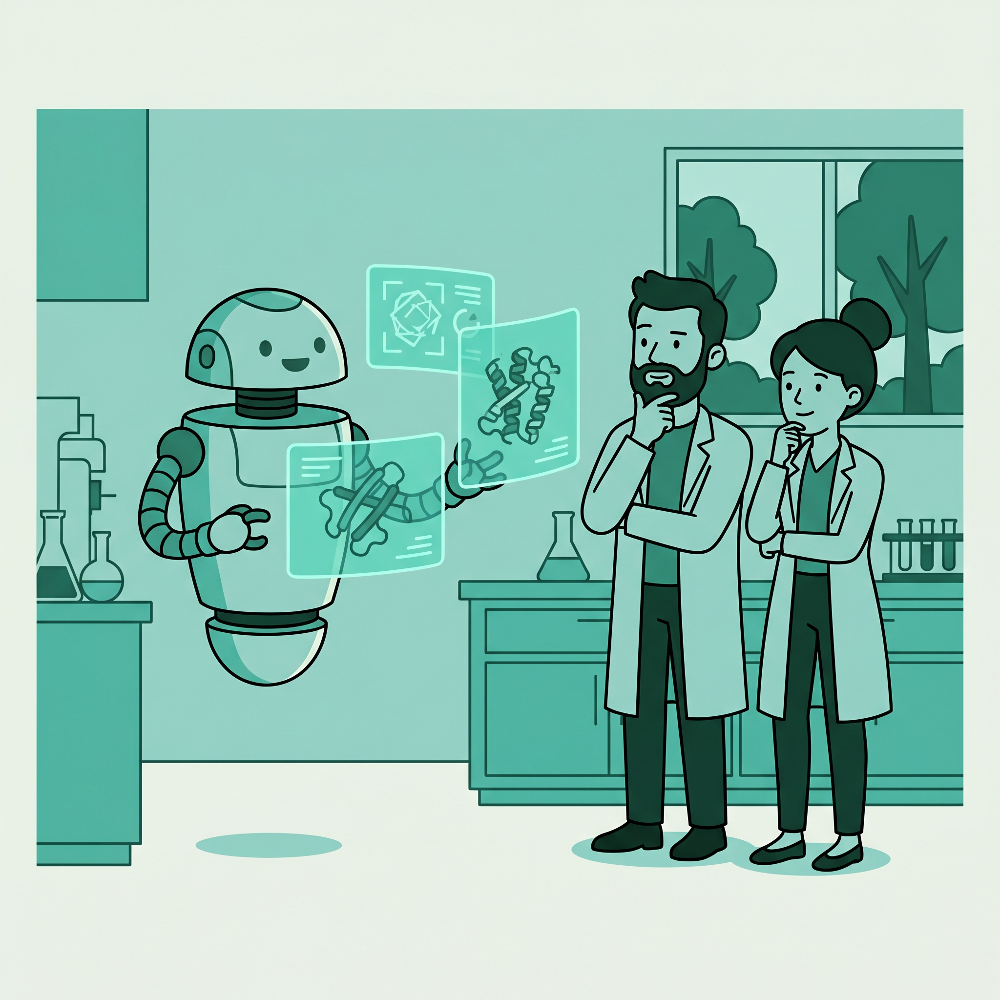

量产落地
京津冀首座具身智能超级工厂在亦庄正式规模化量产
来源：国际科技创新中心 · 2026年04月21日
北京亦庄具身智能超级工厂完成首批人形机器人下线，具身天工Ultra与3.0机型进入规模化阶段。它意味着人形机器人正从样机验证转向标准化生产，企业评估重点将从“能不能做”转为“能不能稳定交付与降本”。
查看原文 →具身智能从展台走向产线；国家电网启动近100亿元具身设备采购；超喵1.0一次上线16个子Agent；DeepSeek V4与GPT-5.5同周交锋评测；云厂商把Agent推到企业核心流程。

北京亦庄具身智能超级工厂完成首批人形机器人下线，具身天工Ultra与3.0机型进入规模化阶段。它意味着人形机器人正从样机验证转向标准化生产，企业评估重点将从“能不能做”转为“能不能稳定交付与降本”。
查看原文 →
国家电网披露2026年具身智能发展规划，计划集中采购多类智能设备并配套投资。对产业链来说，这类大体量订单会拉动上游零部件和系统集成同步扩产，也让“先有场景再有规模”的商业闭环更快形成。
查看原文 →
中科云谷发布RobotOps与新款人形机器人，强调在复杂工业工序中实现统一调度与协同控制。对制造企业而言，真正价值不只是一台机器人，而是“机器人+工艺+数据”的整套生产控制能力。
查看原文 →淘工厂星火3.0与天猫超市智能体同步推进，AI正覆盖选品、投放、履约等经营环节。中小商家过去依赖经验试错，如今可先用模型模拟结果再决策，显著降低大促期的库存和投放失误成本。
查看原文 →
“超喵1.0”将商品规划、营销策略和供应链管理串成统一系统，并在新品上线前进行销售模拟。它的重要性在于把零售运营从“人追问题”改成“系统预判问题”，让团队把精力放在策略优化而非重复操作。
查看原文 →
报告指出生成式引擎优化（GEO）正在成为品牌争夺AI搜索入口的新基础设施，企业选型重心从单次曝光转向长期可见性。对市场团队来说，内容策略、知识库结构和合规治理将变成同等重要的增长变量。
查看原文 →
报道聚焦AI在靶点发现环节的真实价值：不是“替代研发”，而是把筛选路径更早收敛。对生物医药企业而言，这意味着前期探索周期可被压缩，失败成本更可控，研发团队可以更快进入可验证的实验阶段。
查看原文 →
英矽智能梳理了AI参与靶点识别和优先级评估的最新方法，强调多模态数据协同的重要性。对产业侧的启发是：未来竞争不只看单一模型精度，还看数据治理、实验反馈和模型迭代能否形成连续闭环。
查看原文 →文章显示生命科学模型开始覆盖化学结构理解、基因组分析与科研工具调用等任务链路。它的意义在于把“信息检索型AI”升级为“可执行型AI”，帮助科研团队在同一工作流中完成假设提出到验证准备。
查看原文 →• LeRobot - 面向机器人学习的数据集与策略训练框架 [GitHub](https://github.com/huggingface/lerobot) | [HuggingFace](https://huggingface.co/lerobot)
• OpenVLA - 视觉-语言-动作一体化机器人模型基线 [GitHub](https://github.com/openvla/openvla) | [HuggingFace](https://huggingface.co/openvla/openvla-7b)
• OpenFold - 蛋白质结构预测训练与推理实现 [GitHub](https://github.com/aqlaboratory/openfold) | [HuggingFace](https://huggingface.co/nvidia/OpenFold2)
• ESM-2 - 蛋白质序列表示学习模型家族 [GitHub](https://github.com/facebookresearch/esm) | [HuggingFace](https://huggingface.co/facebook/esm2_t33_650M_UR50D)
DeepSeek V4预览版开源后，多家第三方评测给出积极结果，重点优势集中在代码任务与超长上下文。对开发团队来说，选型逻辑正在变化：除了绝对分数，更要看成本、上下文长度与工程可接入性是否匹配。
查看原文 →GPT-5.5强调在Agent编码、计算机操作与推理链路上的提升，同时价格策略也引发企业预算讨论。对业务团队来说，这提醒我们在模型升级时不能只看性能上限，还要同步测算单位任务成本与交付效率。
查看原文 →Kimi K2.6发布后在多项开源评测表现突出，重点展示了长时间编码稳定性与并行任务处理能力。它说明国产开源模型在工程实战中的竞争力继续抬升，企业可获得更多可控、可私有化的技术路线选择。
查看原文 →谷歌云在同一发布周期内同时更新训练与推理芯片，并配套企业级Agent能力。其信号很明确：Agent竞争已不只在模型层，而是算力、平台与应用工具链一体化竞争，企业采购将更看重整套生态协同。
查看原文 →AWS将DevOps Agent推进到正式可用，覆盖故障分析、部署诊断与自动化运维操作。对研发团队而言，这会把值班模式从“人盯告警”转为“人审关键决策”，让运维人力更多投入系统韧性设计和复盘改进。
查看原文 →CodeBanana定位企业级AI原生协作平台，强调人和多个智能体在统一流程里共同推进任务。它的重要变化是把AI从“单点助手”升级为“流程参与者”，推动组织协作方式与岗位分工同步重构。
查看原文 →• vLLM - 高吞吐推理引擎，适合大模型在线服务 [GitHub](https://github.com/vllm-project/vllm) | [HuggingFace](https://huggingface.co/docs/text-generation-inference/main/en/conceptual/vllm)
• SGLang - 面向Agent与复杂推理的高性能服务框架 [GitHub](https://github.com/sgl-project/sglang) | [HuggingFace](https://huggingface.co/collections/sgl-project/sglang-models-66bd433d4f5f6e1dc1f6d90c)
• OpenHands - 面向软件任务的开源开发Agent [GitHub](https://github.com/All-Hands-AI/OpenHands) | [HuggingFace](https://huggingface.co/all-hands)
• LangGraph - 可控多Agent工作流编排框架 [GitHub](https://github.com/langchain-ai/langgraph) | [HuggingFace](https://huggingface.co/learn/agents-course/unit1/langgraph)